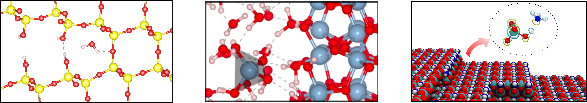

Levi Felix's Homepage
Atomistic modeling of mechanics, thermal transport and degradation of materials

Many processes that control the performance and lifetime of materials occur at atomic length scales and under conditions that are difficult to access directly in experiments, such as extreme temperatures, high stresses, reactive environments, or buried interfaces. Computational materials science provides a way to resolve these mechanisms from the atomistic level, connecting structure, bonding, defects, and chemical reactions to macroscopic properties such as strength, heat transport, and degradation resistance.
Career
I am currently a Postdoctoral Research Associate in the Department of Materials Science and NanoEngineering at Rice University, working in the Yakobson Research Group .
My research career started during my Ph.D., where I used atomistic simulations to study the mechanical behavior, fracture, impact response, thermal stability, and thermal transport of low-dimensional and carbon-based materials. My first-author work from this period includes studies on schwarzites, diamond schwarzites, amorphous carbon, guided fracture in graphene structures, pentadiamond, and thermal transport in knotted graphene nanoribbons.